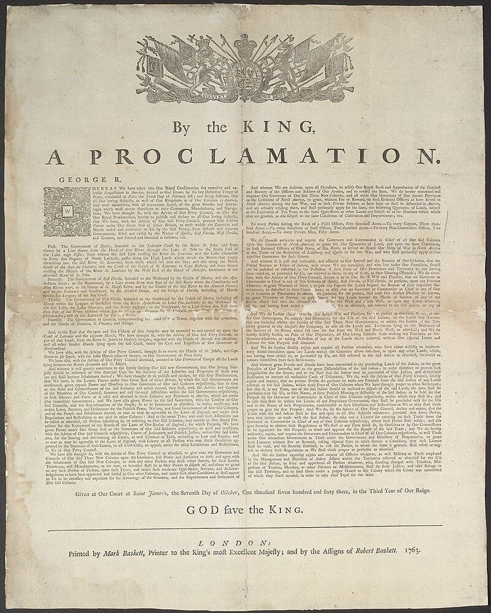

-This was an oil painting made of the Battle of Bunker Hill. Although the American Patriots lost the Battle of Bunker Hill, they proved that they could hold their own against the British Army, it also showed that there was no chance of reconciliation between the England and the American Colonies.

-This was a painting made of the Boston Massacre by Patriot Paul Revere. This painting was impactful because it was a huge propoganda message making the colonists seem like innocent victims.

-This was a painting made of the Second Continental Congress By John Trumbull. The painting visually presered the likeness of many of the Founding Fathers, it represented the moment when the Declaration of Independence was signed.

-This was a photo taken of the Proclamation Act of 1763. The Proclomation of 1763 established a border in the Appalachian Mountains that stopped colonists from living west of it, it also established new rules for the colonists relations with Indigenous people.

-This was a painting made of the death of General Wolfe in the French and Indian War. It was important because General Wolfe's death was a pivotal moment in the Battle of Quebec.